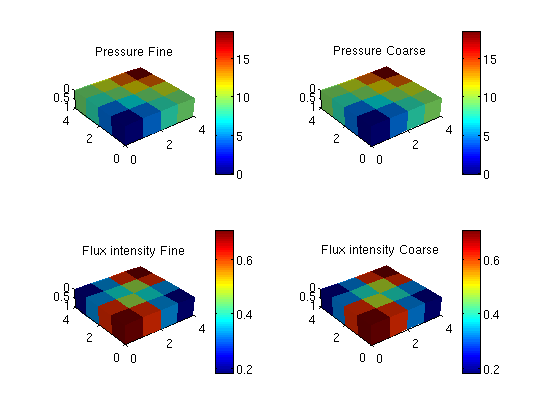

Contents
function simpleMSSourceExample(varargin)
% simpleMSSourceExample -- Demonstrate handling of explicit sources in % multiscale pressure solvers. % % SYNOPSIS: % simpleMSSourceExample() % % PARAMETERS: % None. % % RETURNS: % Nothing. require coarsegrid cellDims = [4, 4, 1]; coarseDims = [ 2, 2, 1]; verbose = true; G = cartGrid(cellDims, cellDims); G = computeGeometry(G); rock.perm = repmat(100 * (darcy() / 1000), [G.cells.num, 1]); rock.poro = repmat(0.3, [G.cells.num, 1]); fluid = initSimpleFluid('mu' , [ 1, 10]*centi*poise , ... 'rho', [1000, 700]*kilogram/meter^3, ... 'n' , [ 2, 2]); xRef = initResSol(G, 0.0); xMs = initResSol(G, 0.0); p = partitionUI(G, coarseDims); p = processPartition (G, p, 'Verbose', verbose); CG = generateCoarseGrid(G, p, 'Verbose', verbose); S = computeMimeticIP(G, rock, 'Verbose', verbose);
Elapsed time is 0.011823 seconds. Using inner product: 'ip_simple'. Computing cell inner products ... Elapsed time is 0.001822 seconds. Assembling global inner product matrix ... Elapsed time is 0.000049 seconds.
Alternative 1:
Call addSource before calling generateCoarseSystem: The fine-scale sources will then be put correctly into the coarse system in 'generateCoarseSystem' and basis functions are also generated correctly.
src = addSource([], [1, G.cells.num], ... [-1, 1] ./ day(), 'sat', [1, 0, 0; 1, 0, 0]); CS = generateCoarseSystem (G, rock, S, CG, ones([G.cells.num, 1]), ... 'Verbose', verbose, 'src', src); xRef = solveIncompFlow (xRef, G, S, fluid, 'src', src); xMs = solveIncompFlowMS(xMs , G, CG, p, S, CS, fluid, 'src', src); % Plot result: plot_res(figure, G, xRef, xMs); %{ %% Alternative 2: % Add source/sink by calling putSourceMS can after generateCoarseSystem % is called. % Function 'putSourceMS' will update S, CS and CS.basis. W must be re-assembeled. % src = addSource([], [100; 200], [-1; 1], 'sat', [1, 0, 0; 1, 0, 0]); [S, CS] = putSourceMS(G, S, CG, CS, rock, src); xrRef = solveIncompFlow (xrRef, [], G, S, fluid, ... 'src', src); xrMs = solveIncompFlowMS(initResSol(G, 0.0), [], ... G, CG, p, S, CS, fluid, 'src', src) % Plot result: plot_res(figure, G, S, xrRef, xrMs); %% Remove source/sink [S, CS] = rmSourceMS(G, S, CG, CS, rock, [100 200]); %{ xrRef = solveIncompFlow (xrRef, [], G, S, fluid, ... 'src', src); xrMs = solveIncompFlowMS(initResSol(G, 0.0), [], ... G, CG, p, S, CS, fluid, 'src', src); %} % Plot result: plot_res(figure, G, S, xrRef, xrMs); %}
Computing flux and pressure basis functions... Elapsed time is 0.024504 seconds.
end %-------------------------------------------------------------------------- % Helpers follow. %-------------------------------------------------------------------------- function plot_res(f, g, xRef, xMs) cellno = rldecode(1 : g.cells.num, diff(g.cells.facePos), 2) .'; plt = @(v) plotCellData(g, v); pres = @(x) plt(convertTo(x.pressure(1:g.cells.num), barsa())); flux = @(x) plt(convertTo(sqrt(accumarray(cellno, ... faceFlux2cellFlux(g, x.flux).^ 2)), ... meter^3 / day)); set(0, 'CurrentFigure', f) subplot(2,2,1) pres(xRef); set_view(), title('Pressure Fine') cax = caxis; colorbar subplot(2,2,2) pres(xMs); set_view(), title('Pressure Coarse') caxis(cax), colorbar subplot(2,2,3) flux(xRef); set_view(), title('Flux intensity Fine') cax2 = caxis; colorbar subplot(2,2,4) flux(xMs); set_view(), title('Flux intensity Coarse') caxis(cax2), colorbar end %-------------------------------------------------------------------------- function set_view() view(3), camproj perspective, axis tight equal, camlight headlight end